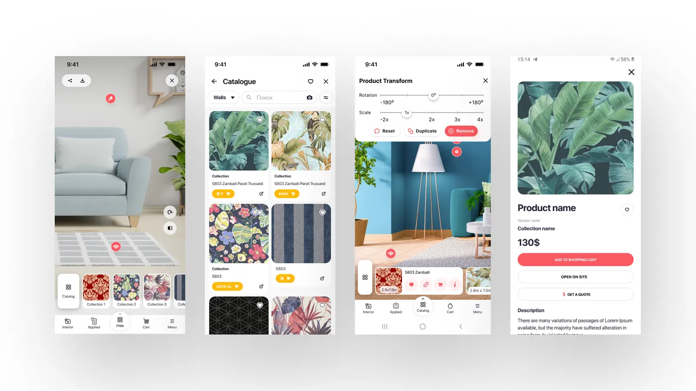
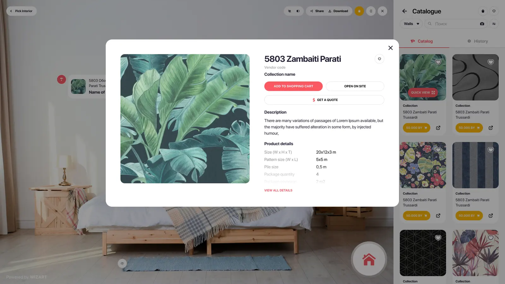
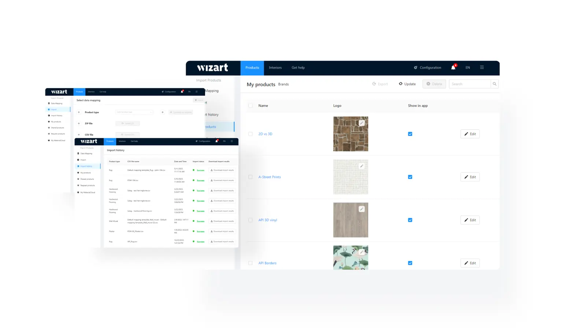

E-Commerce · Product Design
Wizart.ai
A product ecosystem for visualizing interior finishing materials – paints, wallpaper, flooring – across mobile, web and enterprise tools.
- Company
- Wizart
- Role
- Product Designer
- Period
- May 2022 – Mar 2024
- Platform
- Mobile, web, enterprise tools
- Domain
- E-commerce · Visualisation

Overview
A product ecosystem for visualising interior materials
Wizart helps shoppers see a product in their own space before they buy it: paints, wallpaper and flooring across mobile, web and enterprise tools.
I designed new features, led research, ideation, prototyping and usability testing together with product and engineering teams, and kept the design documentation consistent across releases.
01 – Product ecosystem
Four connected services
The platform includes several interconnected services.
- 01
Mobile Visualizer
Real-time material visualisation.
- 02
PIM system
Product Information Management.
- 03
Vision API
Integration and recognition tasks.
- 04
Material Cloud
Centralised asset management.



02 – Research
Hypotheses tested where purchases happen
Ongoing research through surveys and in-store observations in construction retail validated hypotheses and shaped new product directions based on real purchasing behaviour.
03 – Analytics
Decisions guided by data, not opinion
Key metrics included:
- Total users, sessions and renders
- Usage of custom vs. predefined interiors
- Conversion funnel: product selection → cart → checkout
- Most frequently used materials and products
- Behavioural insights gathered via Microsoft Clarity
04 – Design system
Atomic design for a scalable ecosystem
A structured system built on atomic design principles kept the product scalable and consistent – reusable navigation, forms, tables and controls, shared across every product in the ecosystem.
05 – Marketing and print
Beyond the digital product
I also designed brochures, catalogs, flyers, books and exhibition stands, refined through continuous feedback loops with the client.
Result
Improvements shipped on the back of usage analytics increased feature adoption by 12%.
What I designed
More cases